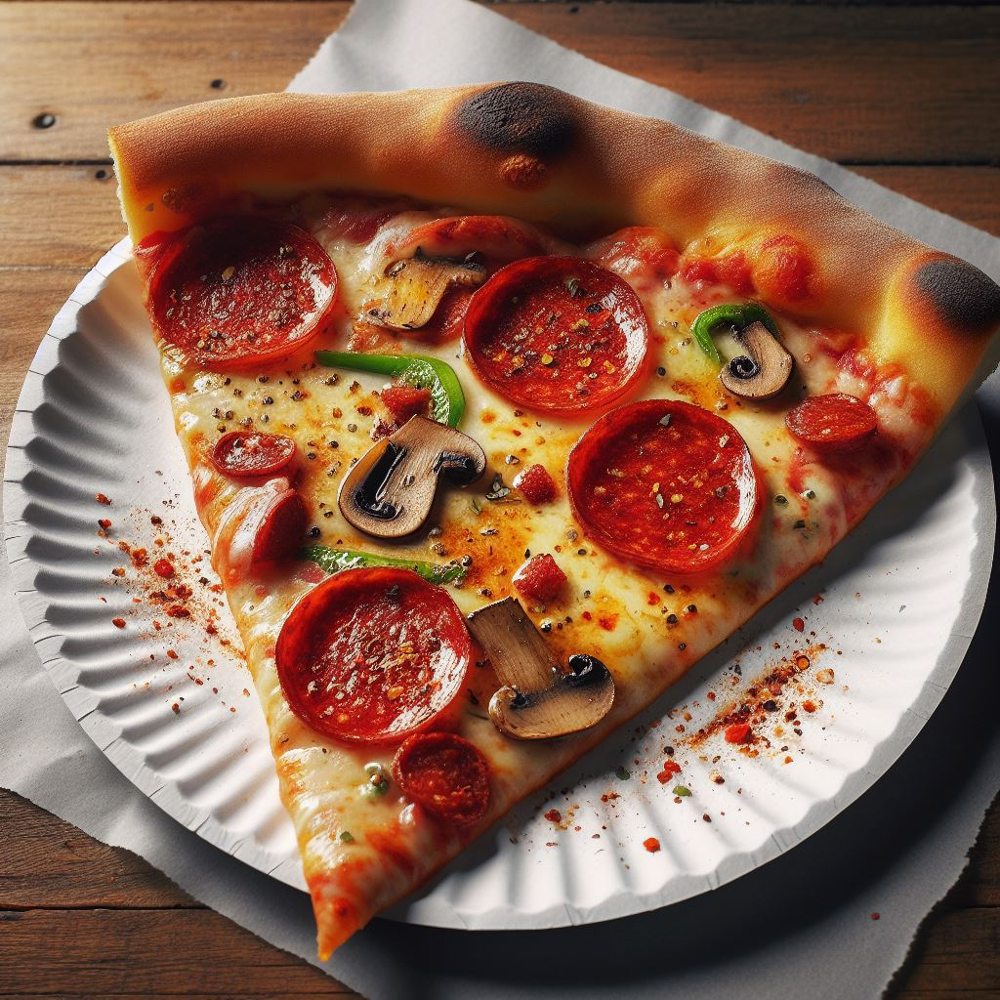

Pizza is a dish consisting of a round, flattened base of dough topped with tomato sauce, cheese, and various ingredients such as meats, vegetables, and herbs. It is typically baked in an oven, resulting in a savory and satisfying meal enjoyed by people of all ages worldwide. While its exact origins are debated, pizza has become an iconic part of Italian cuisine and has evolved into numerous regional styles and variations. It is commonly found in restaurants, pizzerias, and even fast-food chains, making it a convenient and popular choice for casual dining or takeout.
